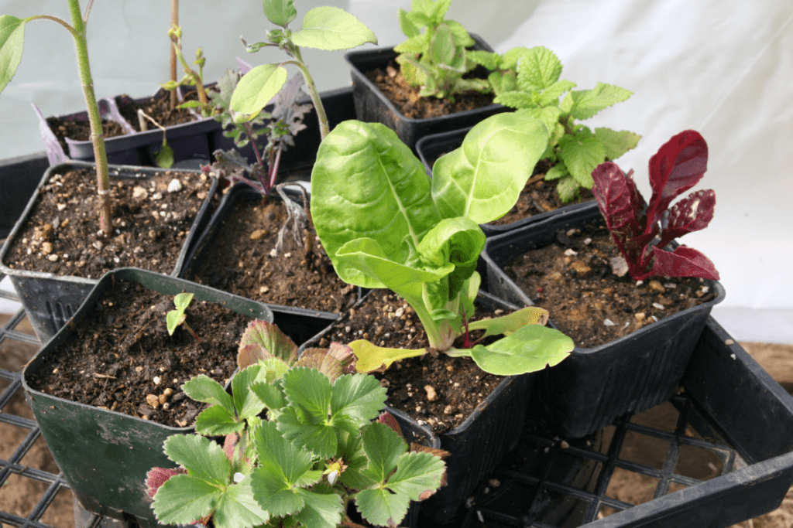
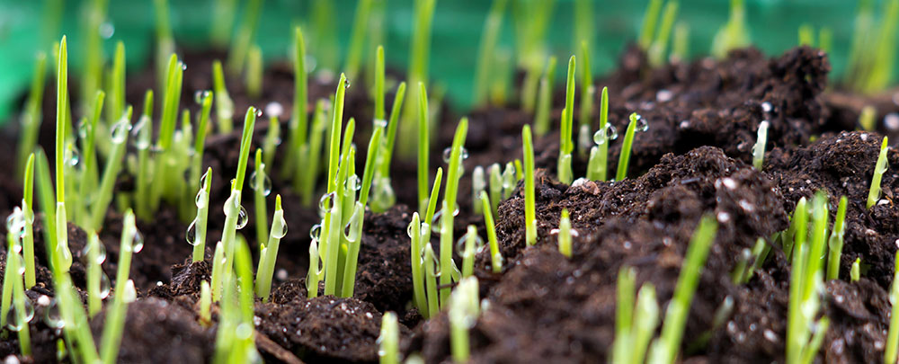

Gardening Tips & Tricks
Discover helpful advice and techniques for successful gardening.
Featured Tips

Gardening Tips for Growing Conditions
Know your USDA Hardiness Zone. Use it as a guide to avoid planting perennials, trees, and shrubs that won't survive winters in your area. Native species of plants are often better adapted to growing in your region than plants from other places in the world.
Read More
Get to know your garden
Before you start, it's a good idea to get to know your garden. Check the aspect – is it south-facing or north-facing? Knowing where the sun hits the ground will help you decide what to grow where.
Read More
Cultivate, In the Spring & Fall
A more effective technique is tilling at the end of the season to restore nutrients back into the soil. And then again the spring.
Read More